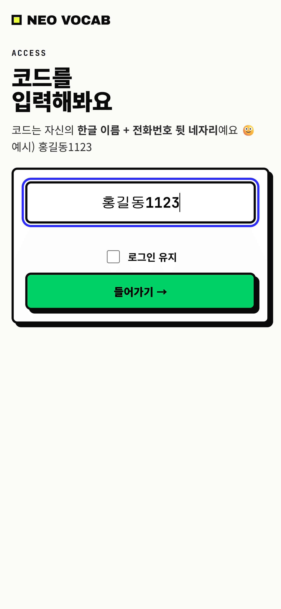
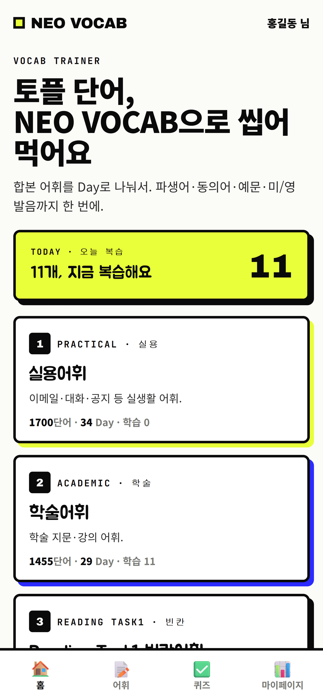
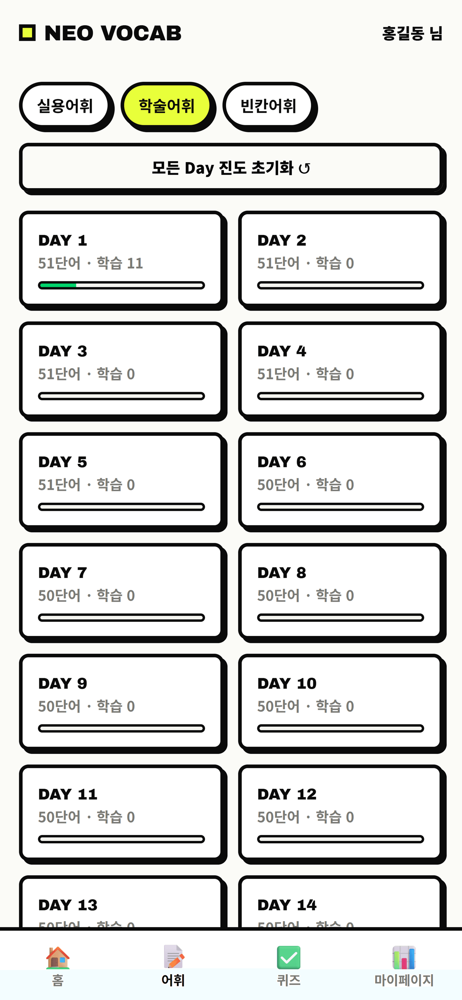
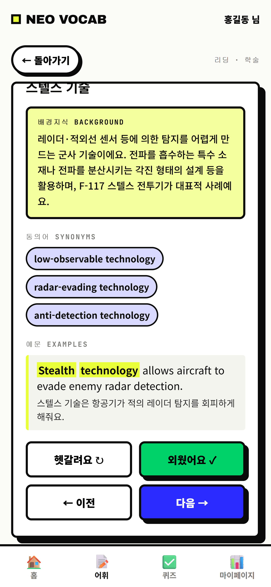
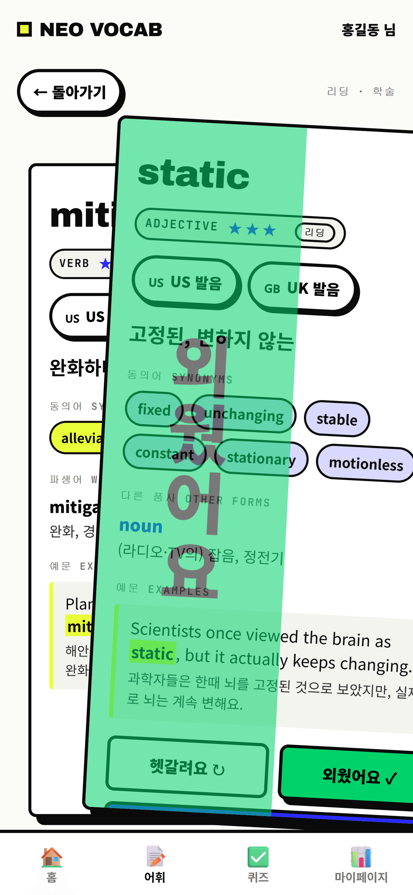
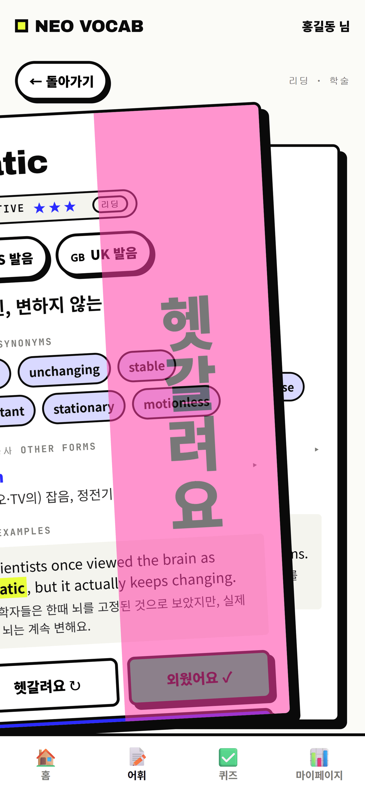
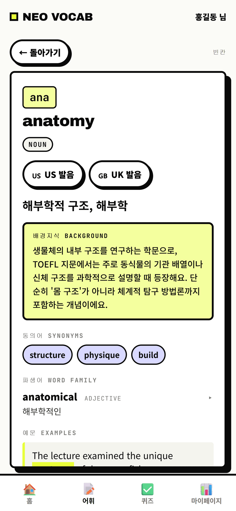
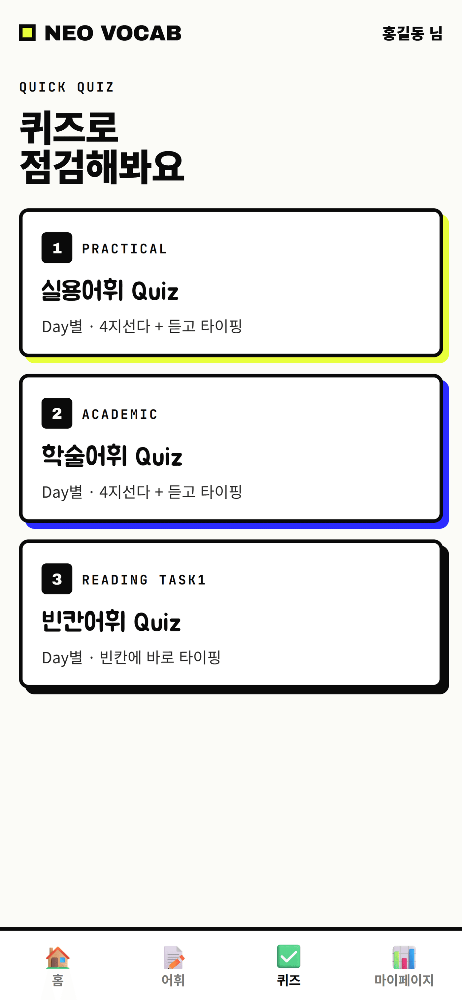
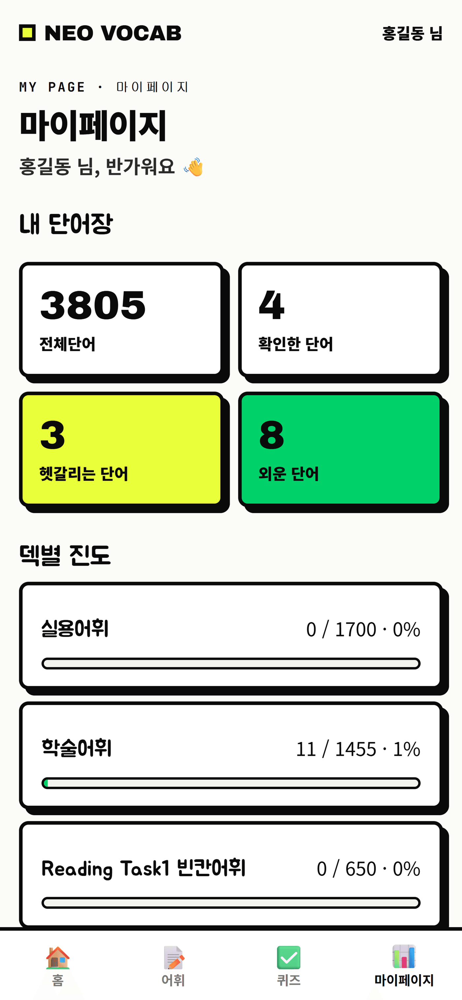
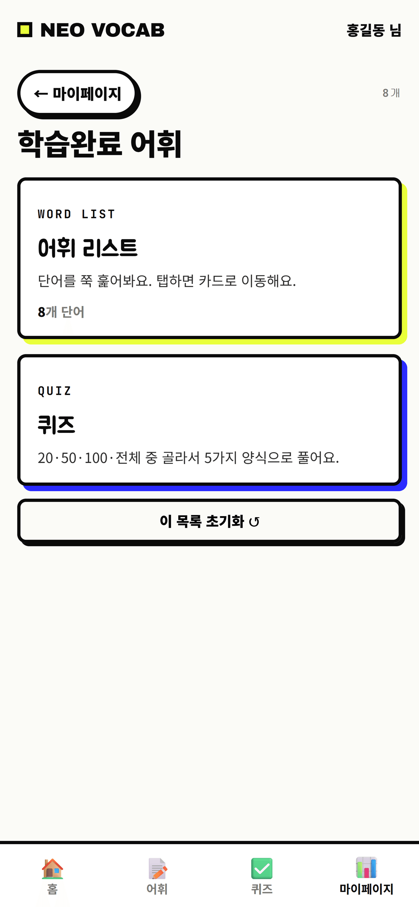

설치부터 학습·복습·진도 확인까지 — 화면 따라 한 번만 보면 감 잡혀요.
브라우저로 앱 주소를 연 다음, 홈 화면에 추가하면 일반 앱처럼 아이콘으로 실행돼요. (설치 용량 거의 없어요.)
받은 코드를 입력하고 들어가기를 눌러요. 코드는 자신의 한글 이름 + 전화번호 뒷 네 자리예요 (예: 홍길동1123).
로그인 유지를 체크하면 다음엔 코드 없이 바로 열려요.

홈 화면에서 오늘 복습할 단어 수가 보이고, 아래에서 학습할 어휘 덱을 골라요.

덱에 들어가면 Day별로 단어가 나뉘어 있어요. Day를 누르고 단어를 열면 한 장에 다 들어 있어요:


카드를 오른쪽으로 밀면 "외웠어요", 왼쪽으로 밀면 "헷갈려요"로 분류돼요. 버튼을 눌러도 돼요.
헷갈린 단어는 복습으로 다시 돌아오고, 외운 단어는 외운 단어 목록에 쌓여요.


Reading Task1 대비 빈칸 카드예요. 단어 일부가 빈칸으로 나오고, 카드를 열면 정답 · 뜻 · 배경지식 · 파생어 · 예문이 한눈에 보여요.

외운 게 진짜 남았는지 Day별 퀴즈로 확인해요. 4지선다와 듣고 타이핑, 빈칸 타이핑까지 있어요.

마이페이지 탭에서 확인한 / 헷갈리는 / 외운 단어 수와 덱별 진도를 한눈에 봐요. 카드를 누르면 그 단어 목록으로 들어가요. 설치·발음 설정 안내도 여기에 있어요.

